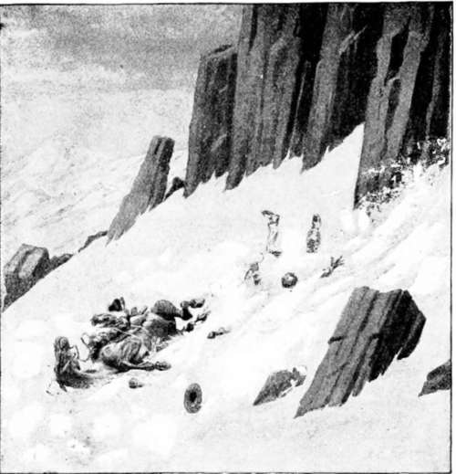

Hunting American Big Game. Part 6
Description
This section is from the book "Hunting", by Archibald Rogers. Also available from Amazon: Hunting.
Hunting American Big Game. Part 6
But instead of doing so, he discarded his rifle, and reached for her tail. Ah, I thought so! for, as he gave a yank, up came her head, her jaws flew open like clockwork, and a snort came forth. But right between the eyes went the deadly messenger, smashing her skull, and ending any prolonged suffering for any of us. Her end accomplished, we turned to the other partner. He had been taking it all in, and was ready for a fight. He seemed pretty fit too. Fortunately he could not come up to us; the snowdrift was too steep, and he had only two serviceable legs to travel with. Still he had true grit, and faced us; but it was an unequal battle.
Again the bullet reached its victim, and brother ba'r lay quietly on his back, with his legs in the air. No need to trifle with this bear's tail, as any fool could see that he was dead. However, we pelted him with a lot of snowballs; and then Woody went around to his stump of a tail, and pulled it, while I stood guard at his head. We took off our coats, and soon had the skins off the pair of them. These skins proved to be in the finest condition, though the bears themselves were poor. I should judge one was a three-year-old and the other a two-year-old. Still, they were good-sized grizzlies.
Those skins seemed to grow in size and weight as each of us lugged one up the side of the mountain, over shelving rock, snow, and loose gravel, to where we left our horses. Of course they were not there, and we had to go on carrying the skins, which were growing heavier and heavier every minute, until we tracked our horses to where they were feeding; and, in Western vernacular, "we had a circus" packing those skins on my horse. It was done at last, though, and to stay, by means of blindfolding him with a coat; and after a little while he settled down to work as though he had carried bears all his many years of service. I had a very nasty time in getting down the mountain after my horse slipped and fell down a gap in the crown rock. We could not get the other down, so I took charge of my horse and skins, and made the rest of the descent in safety, though it looked squally for a bit when the old rascal's feet slid out from under him, knocking me down in the snow, and he on top; and I could feel that even with the fleecy covering the rocks were still very hard.
A nasty time getting down the mountain.
However, it was deep enough for me to crawl out, more scared than hurt; and soon we had sage-brush and grass under our feet, with an easy trail to camp, where a square meal inside of a stomach that sorely needed it soon made amends for all hardships. Wondering what those bear had been at work at, I went back the next day, and found that they had been tearing up a sheep that had died of scab, a disease that wild sheep are subject to.
To a thorough sportsman, killing bears after a successful stalk is by long odds the best and most exciting method, but the country must be such as permits of this; as, for instance, when there are long stretches of high mountains, plateaus, or ridges above or devoid of timber, where the bears resort to root, and where the hunter can from some elevated post look over a large area with the aid of glasses. The general procedure, though, is to put out bait; that is, to have the carcass of some animal to attract the bear; and many a noble elk or timorous deer has been thus sacrificed. To avoid this needless destruction, the writer has invariably taken along on his hunting-trips aged and worn-out horses, which answer admirably when it comes to drawing bears to a carcass. Of course, this is not always a sure way; for the bear, if alarmed or disturbed, will only visit the carcass at night, and then, if the hunter is persistent and determined to get a shot, he may expect many weary hours of watching from a friendly pine.
I think I hear the reader say, What's the fun in shooting a bear from a tree? there is no risk in that. True, there is not; but it is when you come down from your perch that you may not feel quite so safe, as with limbs benumbed from cold and lack of circulation you climb down, knowing perhaps that several watchful pairs of eyes or cunning nostrils are studying your movements. Involuntarily your thoughts travel in the vein of your gloomy surroundings as you go stumbling on your way to camp: What if the bear should prefer live goose-flesh to dead horse?
One spring morning I was knocking around under the base of the mountains, and found myself, about dinner-time, so close to Colonel Pickett's cosey log cabin, that I determined to pay him a long-postponed visit. After an ample repast, including some delicious home-made butter, which I had not tasted for a month,
Woody and I, with our little pack-train, regretfully filed off, and, fording the river, took up our wanderings, not expecting to see our cheery host again for a year.
We had not proceeded far, though, when we met an excited "cow-puncher," who evidently had news to tell. He had been up on the side of the mountain, which was here a long grassy slope as smooth as any of our well-tended lawns, extending upward to where it joined the dense pine forest which covered the upper portion of the mountain. Our friend was the horse-wrangler for a neighboring ranch, and was out looking for horses. Did any one ever see a horse-wrangler who was not looking for missing stock?
When skirting the timber, he surprised, or was surprised by, a good-sized grizzly, which promptly chased him downward and homeward, and evidently for a short distance was well up in the race. Gathering from his description that the bear had been at work on the carcass of a steer that had died from eating poison-weed, I determined to go back and camp, and see if another skin could not be added to the score. It did not take long to pick out an ideal camping-spot, well sheltered, with plenty of dry wood, and trout from the little stream almost jumping into the frying-pan.
Continue to: